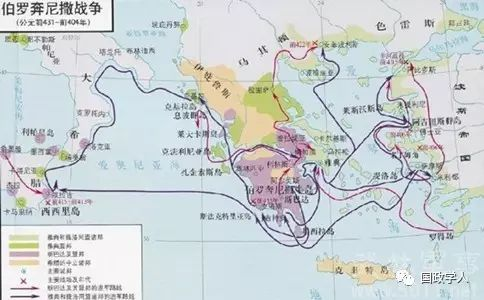

收录于合集

近年来，“ 修昔底德陷阱 ”成为一个热词。要搞明白“修昔底德陷阱”是什么，必须了解一些历史知识。
“陷阱”并非修昔底德的本意
公元前431年到公元前404年古希腊发生过一场战争，交战的双方是两个城邦国家斯巴达和雅典，以及各自领导的城邦同盟。古希腊有几百个城邦，各自为政，相互间经常械斗，战争频繁。但这场战争的特殊之处是几乎所有的希腊城邦都卷入了战争，而且分成两个阵营，即斯巴达领导的伯罗奔尼撒同盟和雅典领导的提洛同盟。伯罗奔尼撒同盟是伯罗奔尼撒半岛上各城邦的一个防御性同盟，斯巴达握有主导权；提洛同盟是在公元前478年由雅典建立的，起初是为了对付波斯，后来变成雅典控制其他城邦的工具，雅典强迫各城邦听命于它，并向其纳税。

伯罗奔尼撒战争
伯罗奔尼撒战争之所以爆发，其根本原因是历史学家们所说的“雅典帝国主义”，即雅典试图控制整个希腊，为此不惜动用武力。《伯罗奔尼撒战争史》的作者修昔底德这么说：“在这些年中，雅典人使他们的帝国日益强大，因而也大大地增加了他们自己国家的权势。斯巴达人虽然知道雅典势力的扩大，但是很少，或者根本没有制止它；在大部分的时间内，他们仍然保持冷静的态度，因为在传统上，他们如果不是被迫而作战的时候，他们总是迟迟而作战的；同时也因为他们自己国内的战争，他们不能采取军事行动。所以最后，雅典的势力达到顶点，人人都能够清楚地看见了；同时，雅典人开始侵略斯巴达的盟国了。在这时候，斯巴达人感觉到这种形势不能再容忍下去了，所以决定发动现在这次战争，企图以全力进攻，如果可能的话，他们想消灭雅典的势力。”这是对事件的客观陈述，也是后来历史学家们的共同理解。必须指出：修昔底德是雅典人，还担任过雅典的最高官职将军，他对战争的解释如此客观、不偏不倚，是非常难能可贵的，不失为史德的表率。
但中国的大众媒体对这次战争是这么说的：“公元前5世纪，雅典的急剧崛起震惊了陆地霸主斯巴达。双方之间的威胁和反威胁引发竞争，长达30年的战争结束后，两国均遭毁灭。修昔底德总结说，‘使得战争无可避免的原因是雅典日益壮大的力量，还有这种力量在斯巴达造成的恐惧。’”接下来的这段话就引出了“修昔底德陷阱”这个概念：“当一个崛起的大国与既有的统治霸主竞争时，双方面临的危险——正如公元前5世纪希腊人和19世纪末德国人面临的情况一样，这种挑战多数以战争告终。”这些媒体还特意标明：如此说法“是古希腊历史学家修昔底德提出来的，他认为当一个崛起的大国（指雅典）与既有的统治霸主（指斯巴达）竞争时，双方的冲突多以战争结束，伯罗奔尼撒战争就是如此”，这就是“修昔底德陷阱”。
荐书：修昔底德著作《伯罗奔尼撒战争史》
很明显，这是强加给修昔底德的，修昔底德不是这个意思。在修昔底德那里，雅典不是新崛起的大国，斯巴达也不是既有的霸主，伯罗奔尼撒战争不是大国关系的“铁律”。
“修昔底德陷阱”从何而来
既然“修昔底德陷阱”并非修昔底德之意，那么它是从哪里来的？它来自一个美国人格雷厄姆·艾利森，他曾担任过美国国防部长特别顾问，与美国政府过从甚密，同时也是哈佛大学教授。他为了给21世纪的中美关系定性，特意把两千多年前古希腊的将军兼历史学家修昔底德请出来为自己助威，杜撰了一个“修昔底德陷阱”。为了证明“陷阱”的存在，他煞费一番苦心旁征博引：据他说，历史上发生过无数次新崛起的大国挑战现存大国的事例，而多数以战争结局；他特别强调第一次世界大战的典型性，说这次战争的根源就是新崛起的大国德国挑战了当时的大国英国，从而引发了世界灾难，正如同雅典挑战斯巴达、斯巴达便发动战争一样，导致整个希腊世界受到重创。
哈佛大学教授格雷厄姆•艾利森
如此一来，“陷阱”理论的弦外之音就很清楚了：既然艾利森是为中美关系定位，那么，中国挑战了美国，两国就必有一战，因此美国要做好应付中国的准备，要准备打仗。显然，此人是典型的美国“智库”，为美国政府出谋划策。不过，此弦之外还有他音，让我们再来看看历史。
斯巴达和雅典，谁是新崛起的大国、谁是现存大国，那是说不清楚的，因为那个时候既没有现代统计学，又没有GDP之类的数据，无法衡量谁比谁更强。我们只知道古代希腊世界有几百个城邦，雅典和斯巴达是其中最大的两个。斯巴达与雅典居民人口数量相仿。但雅典以工商业为主，斯巴达基本上是农业经济，以财富论，工商业应该比农业更富裕。另一方面，雅典的公民人数远多于斯巴达——在古希腊，只有公民才有资格上战场，所以雅典的军事潜力应该大于斯巴达。雅典的富裕使它拥有一支海军，而斯巴达基本上是一个内陆国家。这些情况都说明：将斯巴达定义为现存霸权国家，而将雅典定义为新崛起国家，可能与事实并不相符。也许雅典本来就比斯巴达强，因此它更加冒进，更愿意执行帝国主义政策；斯巴达则比较谨慎，更专注于内部事务，修昔底德就是这么说的。
“陷阱”理论在西方走红的弦外之音
但“修昔底德陷阱”理论却将战争责任归于斯巴达：它不能接受雅典的崛起，于是发动战争。在雅典和斯巴达的这个案例中，“陷阱”理论显然站在所谓的“新崛起国家”雅典一边，指责“现存国家”斯巴达。不过让人迷惑不解的是，当这个理论被套用于第一次世界大战的时候，指责的对象却是德国：德国的穷兵黩武和扩张野心威胁了英国，而作为“现存国家”的英国是被迫卷入战争的，它原本不愿与德国打仗。乍看起来出现了逻辑混乱，因为依照伯罗奔尼撒战争的范式，英国应该是战争的责任方，是英国这个“现存国家”对德国的“崛起”感到恐惧，才会导致大战。
德皇威廉二世，一战前推行军国主义扩张政策
然而恰恰是在这个貌似混乱的逻辑后面，我们听到了更多的弦外之音：在西方思维模式中，斯巴达一向是强权、专制、军国主义、蛮横无理的象征，雅典则代表着民主、自由、理性、智慧等等，是西方价值观的集中体现。因此在伯罗奔尼撒战争中，雅典一定是正确的，斯巴达必定是邪恶的。但是在第一次世界大战时，英国却代表着民主、自由、理性和智慧，所以，英国应当是正义的一方，德国则必定邪恶。可是，正是在这里，一阵阴沉的弦外之音隐隐可闻：“陷阱”理论在最近几年突然走红，因为它预测了今后的中美关系，按西方的逻辑，中美是价值观完全相反的两个国家，拿“陷阱”的思维去定位，它想说什么其实已经昭然若揭了。
“陷阱”是杜撰的，并非“铁律”
让我们再来看历史的真相，在第一次世界大战的问题上“陷阱”理论再次背离事实。关于第一次世界大战的原因，史学界基本上有公论：战争是西方国家争夺殖民地的结果，在这个过程中形成了两大军事集团，正是这种“结盟”的政策把所有西方国家都卷进了战争，任何国家都身不由己。把第一次世界大战的责任完全归咎于德国是不公正的，两个集团都应该承担责任。第一次世界大战和第二次世界大战的性质完全不同，第二次世界大战是世界人民反侵略战争，第一次世界大战则是两个军事集团互相厮杀，不存在正义与非正义之分。有趣的是，实际上英国在那个时候还不是西方人自己说的“现代民主国家”，当时它还没有走完民主化路程；当时，没有哪个西方国家完成了向现代“民主”的转型，所有国家都不是现代意义的“民主国家”。由此我们已经明白，“陷阱”论带有很强的意识形态色彩，并非“铁律”，而是一个杜撰的理论。
英国崛起与“修昔底德陷阱”毫无关系
可是在人类历史的现实中，我们确实看到大国之间的矛盾与冲突有时会发展到相当激烈的程度，最强国家之间经常交恶乃至战争。如何处理大国关系，便成为国家的大事。让我们考察一下英国近几百年来的处理方式。英国从一个偏远岛国崛起为独霸世界的头号强国，得益于它的外交谋略。英国崛起与“修昔底德陷阱”毫无关系，在英国崛起的过程中，它先是挑战者，后来是守成者；但它从来不受这个“陷阱”的困扰，它的外交谋略帮助它一路破关斩将。
英德军备竞赛时期的英国舰队
英国的谋略很简单，可以归纳为三大原则：英国利益至上；没有永恒的朋友和敌人；打击最强国。这三个原则之间的关系是这样的：在处理与其他国家的关系时，永远以英国利益为判断标准，无需考虑意识形态和道德义务；因此，朋友和敌人都依据英国的利益来择取，一个时期是朋友，另一个时期可以是敌人，利益发生变化了，对他国的关系定位也就发生变化；可是，谁是朋友、谁是敌人？这是一个简单的问题：最强大的国家是敌人，站在敌人对立面的都是朋友，英国要拉住所有的“朋友”结成同盟，摧毁它的敌人。
几百年中，英国都遵循这些原则，从而在风云变幻的世界上立于不败之地。16世纪西班牙是欧洲最强国，英国联合其他国家打败西班牙，自己也成为欧洲强国。17世纪荷兰称霸海洋，是最强大的商业国家，英国与其他国家结成同盟打败荷兰，把荷兰的海权夺到自己手里。18世纪开始，法国成为英国最强大的对手，为了战胜法国，英国与法国在世界范围内打了一百多年仗，这时，荷兰已经是英国的盟友，而奥地利和普鲁士交替成为英国结盟的对象——它们之中谁站在法国一边，那么另一个就是英国的盟友。到19世纪初，英国把所有欧洲国家都纠集起来共同打败法国，这以后，英国就稳坐世界第一把交椅了，它成了世界第一大强国。此后英国的外交政策，就把矛头对准所有欧洲国家中最冒尖的那一个，就是“杀老二”，谁当老二就杀谁：19世纪中叶它把矛头对准俄罗斯，法国是它的盟友；19世纪末德国成了封杀的对象，英国与法、俄结盟，共同对付德国。
简单回顾英国的外交谋略可以清楚地看到，在处理大国关系时英国很自觉地把矛头指向欧洲最强国，为此不惜发动战争，把对手彻底摧毁。在这里，看不到所谓的“修昔底德陷阱”，只有外交谋略。然而，英国的外交手腕现在却被美国完美承袭并且执行了，二战以后的历史清楚地说明了这一点。二战结束后短短的几十年里，苏联、日本、欧盟先后被美国视为对手或潜在的对手，并且以不同的方式被整治下去。
近年来，“修昔底德陷阱”成为一个热词。要搞明白“修昔底德陷阱”是什么，必须了解一些历史知识。
“陷阱”并非修昔底德的本意
公元前431年到公元前404年古希腊发生过一场战争，交战的双方是两个城邦国家斯巴达和雅典，以及各自领导的城邦同盟。古希腊有几百个城邦，各自为政，相互间经常械斗，战争频繁。但这场战争的特殊之处是几乎所有的希腊城邦都卷入了战争，而且分成两个阵营，即斯巴达领导的伯罗奔尼撒同盟和雅典领导的提洛同盟。伯罗奔尼撒同盟是伯罗奔尼撒半岛上各城邦的一个防御性同盟，斯巴达握有主导权；提洛同盟是在公元前478年由雅典建立的，起初是为了对付波斯，后来变成雅典控制其他城邦的工具，雅典强迫各城邦听命于它，并向其纳税。
伯罗奔尼撒战争之所以爆发，其根本原因是历史学家们所说的“雅典帝国主义”，即雅典试图控制整个希腊，为此不惜动用武力。《伯罗奔尼撒战争史》的作者修昔底德这么说：“在这些年中，雅典人使他们的帝国日益强大，因而也大大地增加了他们自己国家的权势。斯巴达人虽然知道雅典势力的扩大，但是很少，或者根本没有制止它；在大部分的时间内，他们仍然保持冷静的态度，因为在传统上，他们如果不是被迫而作战的时候，他们总是迟迟而作战的；同时也因为他们自己国内的战争，他们不能采取军事行动。所以最后，雅典的势力达到顶点，人人都能够清楚地看见了；同时，雅典人开始侵略斯巴达的盟国了。在这时候，斯巴达人感觉到这种形势不能再容忍下去了，所以决定发动现在这次战争，企图以全力进攻，如果可能的话，他们想消灭雅典的势力。”这是对事件的客观陈述，也是后来历史学家们的共同理解。必须指出：修昔底德是雅典人，还担任过雅典的最高官职将军，他对战争的解释如此客观、不偏不倚，是非常难能可贵的，不失为史德的表率。
但中国的大众媒体对这次战争是这么说的：“公元前5世纪，雅典的急剧崛起震惊了陆地霸主斯巴达。双方之间的威胁和反威胁引发竞争，长达30年的战争结束后，两国均遭毁灭。修昔底德总结说，‘使得战争无可避免的原因是雅典日益壮大的力量，还有这种力量在斯巴达造成的恐惧。’”接下来的这段话就引出了“修昔底德陷阱”这个概念：“当一个崛起的大国与既有的统治霸主竞争时，双方面临的危险——正如公元前5世纪希腊人和19世纪末德国人面临的情况一样，这种挑战多数以战争告终。”这些媒体还特意标明：如此说法“是古希腊历史学家修昔底德提出来的，他认为当一个崛起的大国（指雅典）与既有的统治霸主（指斯巴达）竞争时，双方的冲突多以战争结束，伯罗奔尼撒战争就是如此”，这就是“修昔底德陷阱”。
很明显，这是强加给修昔底德的，修昔底德不是这个意思。在修昔底德那里，雅典不是新崛起的大国，斯巴达也不是既有的霸主，伯罗奔尼撒战争不是大国关系的“铁律”。
“修昔底德陷阱”从何而来
既然“修昔底德陷阱”并非修昔底德之意，那么它是从哪里来的？它来自一个美国人格雷厄姆·艾利森，他曾担任过美国国防部长特别顾问，与美国政府过从甚密，同时也是哈佛大学教授。他为了给21世纪的中美关系定性，特意把两千多年前古希腊的将军兼历史学家修昔底德请出来为自己助威，杜撰了一个“修昔底德陷阱”。为了证明“陷阱”的存在，他煞费一番苦心旁征博引：据他说，历史上发生过无数次新崛起的大国挑战现存大国的事例，而多数以战争结局；他特别强调第一次世界大战的典型性，说这次战争的根源就是新崛起的大国德国挑战了当时的大国英国，从而引发了世界灾难，正如同雅典挑战斯巴达、斯巴达便发动战争一样，导致整个希腊世界受到重创。
如此一来，“陷阱”理论的弦外之音就很清楚了：既然艾利森是为中美关系定位，那么，中国挑战了美国，两国就必有一战，因此美国要做好应付中国的准备，要准备打仗。显然，此人是典型的美国“智库”，为美国政府出谋划策。不过，此弦之外还有他音，让我们再来看看历史。
斯巴达和雅典，谁是新崛起的大国、谁是现存大国，那是说不清楚的，因为那个时候既没有现代统计学，又没有GDP之类的数据，无法衡量谁比谁更强。我们只知道古代希腊世界有几百个城邦，雅典和斯巴达是其中最大的两个。斯巴达与雅典居民人口数量相仿。但雅典以工商业为主，斯巴达基本上是农业经济，以财富论，工商业应该比农业更富裕。另一方面，雅典的公民人数远多于斯巴达——在古希腊，只有公民才有资格上战场，所以雅典的军事潜力应该大于斯巴达。雅典的富裕使它拥有一支海军，而斯巴达基本上是一个内陆国家。这些情况都说明：将斯巴达定义为现存霸权国家，而将雅典定义为新崛起国家，可能与事实并不相符。也许雅典本来就比斯巴达强，因此它更加冒进，更愿意执行帝国主义政策；斯巴达则比较谨慎，更专注于内部事务，修昔底德就是这么说的。
“陷阱”理论在西方走红的弦外之音
但“修昔底德陷阱”理论却将战争责任归于斯巴达：它不能接受雅典的崛起，于是发动战争。在雅典和斯巴达的这个案例中，“陷阱”理论显然站在所谓的“新崛起国家”雅典一边，指责“现存国家”斯巴达。不过让人迷惑不解的是，当这个理论被套用于第一次世界大战的时候，指责的对象却是德国：德国的穷兵黩武和扩张野心威胁了英国，而作为“现存国家”的英国是被迫卷入战争的，它原本不愿与德国打仗。乍看起来出现了逻辑混乱，因为依照伯罗奔尼撒战争的范式，英国应该是战争的责任方，是英国这个“现存国家”对德国的“崛起”感到恐惧，才会导致大战。
然而恰恰是在这个貌似混乱的逻辑后面，我们听到了更多的弦外之音：在西方思维模式中，斯巴达一向是强权、专制、军国主义、蛮横无理的象征，雅典则代表着民主、自由、理性、智慧等等，是西方价值观的集中体现。因此在伯罗奔尼撒战争中，雅典一定是正确的，斯巴达必定是邪恶的。但是在第一次世界大战时，英国却代表着民主、自由、理性和智慧，所以，英国应当是正义的一方，德国则必定邪恶。可是，正是在这里，一阵阴沉的弦外之音隐隐可闻：“陷阱”理论在最近几年突然走红，因为它预测了今后的中美关系，按西方的逻辑，中美是价值观完全相反的两个国家，拿“陷阱”的思维去定位，它想说什么其实已经昭然若揭了。
“陷阱”是杜撰的，并非“铁律”
让我们再来看历史的真相，在第一次世界大战的问题上“陷阱”理论再次背离事实。关于第一次世界大战的原因，史学界基本上有公论：战争是西方国家争夺殖民地的结果，在这个过程中形成了两大军事集团，正是这种“结盟”的政策把所有西方国家都卷进了战争，任何国家都身不由己。把第一次世界大战的责任完全归咎于德国是不公正的，两个集团都应该承担责任。第一次世界大战和第二次世界大战的性质完全不同，第二次世界大战是世界人民反侵略战争，第一次世界大战则是两个军事集团互相厮杀，不存在正义与非正义之分。有趣的是，实际上英国在那个时候还不是西方人自己说的“现代民主国家”，当时它还没有走完民主化路程；当时，没有哪个西方国家完成了向现代“民主”的转型，所有国家都不是现代意义的“民主国家”。由此我们已经明白，“陷阱”论带有很强的意识形态色彩，并非“铁律”，而是一个杜撰的理论。
英国崛起与“修昔底德陷阱”毫无关系
可是在人类历史的现实中，我们确实看到大国之间的矛盾与冲突有时会发展到相当激烈的程度，最强国家之间经常交恶乃至战争。如何处理大国关系，便成为国家的大事。让我们考察一下英国近几百年来的处理方式。英国从一个偏远岛国崛起为独霸世界的头号强国，得益于它的外交谋略。英国崛起与“修昔底德陷阱”毫无关系，在英国崛起的过程中，它先是挑战者，后来是守成者；但它从来不受这个“陷阱”的困扰，它的外交谋略帮助它一路破关斩将。
英国的谋略很简单，可以归纳为三大原则：英国利益至上；没有永恒的朋友和敌人；打击最强国。这三个原则之间的关系是这样的：在处理与其他国家的关系时，永远以英国利益为判断标准，无需考虑意识形态和道德义务；因此，朋友和敌人都依据英国的利益来择取，一个时期是朋友，另一个时期可以是敌人，利益发生变化了，对他国的关系定位也就发生变化；可是，谁是朋友、谁是敌人？这是一个简单的问题：最强大的国家是敌人，站在敌人对立面的都是朋友，英国要拉住所有的“朋友”结成同盟，摧毁它的敌人。
几百年中，英国都遵循这些原则，从而在风云变幻的世界上立于不败之地。16世纪西班牙是欧洲最强国，英国联合其他国家打败西班牙，自己也成为欧洲强国。17世纪荷兰称霸海洋，是最强大的商业国家，英国与其他国家结成同盟打败荷兰，把荷兰的海权夺到自己手里。18世纪开始，法国成为英国最强大的对手，为了战胜法国，英国与法国在世界范围内打了一百多年仗，这时，荷兰已经是英国的盟友，而奥地利和普鲁士交替成为英国结盟的对象——它们之中谁站在法国一边，那么另一个就是英国的盟友。到19世纪初，英国把所有欧洲国家都纠集起来共同打败法国，这以后，英国就稳坐世界第一把交椅了，它成了世界第一大强国。此后英国的外交政策，就把矛头对准所有欧洲国家中最冒尖的那一个，就是“杀老二”，谁当老二就杀谁：19世纪中叶它把矛头对准俄罗斯，法国是它的盟友；19世纪末德国成了封杀的对象，英国与法、俄结盟，共同对付德国。
简单回顾英国的外交谋略可以清楚地看到，在处理大国关系时英国很自觉地把矛头指向欧洲最强国，为此不惜发动战争，把对手彻底摧毁。在这里，看不到所谓的“修昔底德陷阱”，只有外交谋略。然而，英国的外交手腕现在却被美国完美承袭并且执行了，二战以后的历史清楚地说明了这一点。二战结束后短短的几十年里，苏联、日本、欧盟先后被美国视为对手或潜在的对手，并且以不同的方式被整治下去。
文章来源： 搜狐历史
筛选： 晞哲
编辑 ： 里仝
您可能还会喜欢：